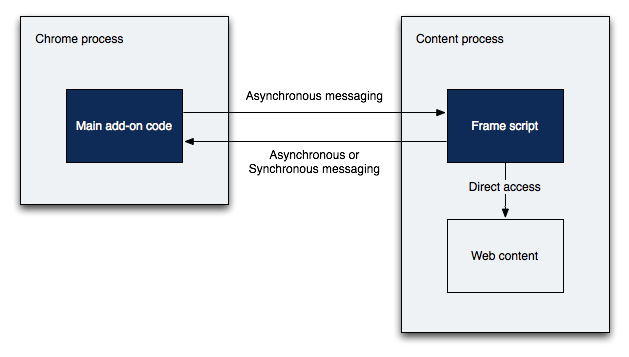

Firefox on Fedora
Martin Stransky
<stransky@redhat.com>
Firefox & Fedora 22
Here we are
Firefox on Gtk3 - Fedora and Arch Linux only
one big cairo surface, custom widgets
(
BZ
vs. widget-factory - CTRL+D)
more possible backends
maybe broadway, wayland
Outstanding bugs (colors, sizes...)
Speed up
Draw faster on Linux
Layer rendering acceleration (skia library)
Layer composition acceleration (GPU, WebGL)
Off main thread everywhere
Multiprocess Firefox
Main process - UI and final rendering
Worker process - web pages composition
Can't access DOM - breaks Add-ons
Uses Chromium IPC libraries
Multiprocess Firefox

Indirect DOM access (via IPC and frame scripts)
Indirect Rendering (Shared memory, GPU memory)
Questions?